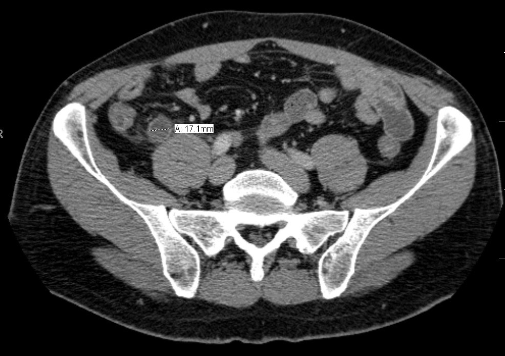

160 — Bụng cấp hố chậu & tắc ruột / Acute GI: appendicitis, diverticulitis & SBO
Tags: pattern:day-thanh-ruot pattern:tac-ruot vung:ong-tieu-hoa protocol:CT-bung-cap
Mức chắc chắn (certainty): tổng hợp y văn (literature synthesis) — nhóm tự biên từ y văn mở, chưa gắn ca nguyên văn đơn lẻ.
1. Tổng quan — 3 số quyết định mổ hay không
- Ruột thừa > 6 mm (ngoài-ngoài, từ đáy manh tràng) + thành > 3 mm + sỏi phân + thâm nhiễm mỡ = viêm ruột thừa (≥ 8 mm đặc hiệu cao).
- Ruột non giãn > 3 cm + điểm chuyển tiếp + dấu phân ruột non = tắc ruột non (SBO).
- Bờm mỡ 1,5–3,5 cm mỡ (−40…−100 HU) + viền tăng tỷ trọng + chấm trắng trung tâm = viêm bờm mỡ → CẤM MỔ (tự giới hạn, giảm đau).
- TẠI SAO số quan trọng: ruột thừa ≤ 6 mm + không thâm nhiễm = theo dõi, tránh mổ oan; quai kín + mất ngấm = mổ tối khẩn.
2. Ma trận 3 hố chậu (tránh mổ oan)
| Thực thể (entity) | Hình ảnh | Chốt | Xử trí |
|---|---|---|---|
| Viêm ruột thừa | Ống cụt > 6 mm + thành > 3 mm + sỏi + thâm nhiễm mỡ | ≥ 8 mm đặc hiệu cao | Mổ/kháng sinh theo phác đồ |
| Viêm túi thừa | Túi lồi + dày thành đoạn dài > 5 cm giữ lớp + thâm nhiễm mỡ | Hinchey Ia–IV (áp-xe ≥ 4 cm = II) | Kháng sinh/dẫn lưu/mổ theo Hinchey |
| Viêm bờm mỡ | 1,5–3,5 cm mỡ + viền + chấm trắng, thành ruột gần bình thường | Mỡ + viền + chấm trắng | Bảo tồn, cấm mổ/kháng sinh mạnh |
3. Tắc quai kín + thiếu máu (mổ tối khẩn)
- Quai kín (closed-loop): quai U/C chứa dịch + xoắn mạch (whirl) + 2 mỏ chim (double beak).
- Thiếu máu: mất ngấm thành + phù mạc treo + khí thành ruột (pneumatosis) + khí TM cửa (ra sát vỏ gan < 2 cm; khác khí đường mật tập trung rốn gan).
- Có 2 nhóm trên = mổ ngay, đừng chờ.

Đo ngoài-ngoài 17,1 mm. Nguồn: Doc James, CC BY-SA 3.0.4. Protocol CT bụng cấp
- Cản quang TM thì cửa (thành ruột + mạch mạc treo) + MPR coronal (ruột thừa/quai tắc).
- Không uống cản quang thường quy (chậm + nôn); trực tràng khi nghi đại tràng.
5. Cạm bẫy
- Ruột thừa sau manh tràng cao (dưới gan) — tìm từ đáy manh tràng, đừng kết luận không thấy.
- Viêm manh tràng đơn độc (typhlitis) sau hóa trị — giống viêm ruột thừa nhưng điều trị nội.
- Bờm mỡ cạnh túi thừa viêm — đọc cả 2, đừng mổ bờm mỡ.
6. Tự lượng giá — Blind Quiz
Ca 1 — Đau hố chậu phải. Đo ruột thừa trước.
- Hỏi: bao nhiêu mm? Ngưỡng nào? Có mổ không?
Bấm để hiện đáp án
- Viêm ruột thừa (17,1 mm >> 8 mm): vượt xa ngưỡng đặc hiệu — mổ/kháng sinh theo phác đồ.
- Đối chiếu bản trơn/annotated trong CREDITS. Nguồn: Doc James, CC BY-SA 3.0.
Ca 2 — Đau hố chậu trái + tổn thương mỡ 2 cm + viền + chấm trắng, thành ruột bình thường: mổ hay bảo tồn? (Bảng mục 2.)
Bấm để hiện đáp án
- Viêm bờm mỡ: bảo tồn (giảm đau), cấm mổ.
Bài liên quan chéo
- 100 – Tổng quan hệ Bụng
- 110 – Giải phẫu bụng (đáy manh tràng, mạc treo)
- 162 – Tắc ruột & mạc treo (đã có) (quai kín)
- 145 – Viêm ruột thừa trong thai kỳ: ruột thừa di lệch, siêu âm → MRI
Không dùng để chẩn đoán độc lập khi chưa có người hướng dẫn.